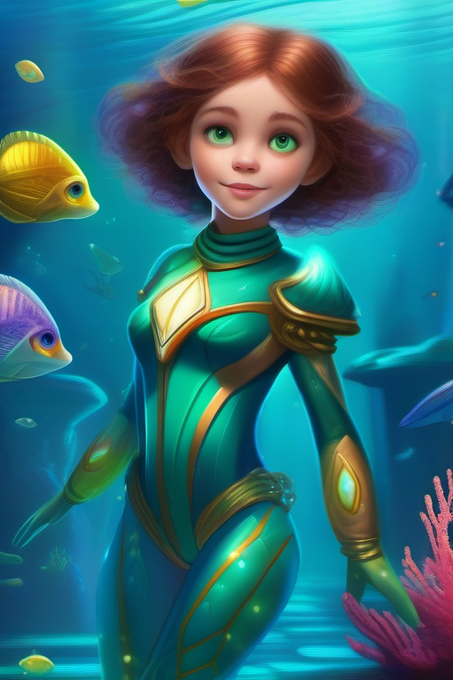
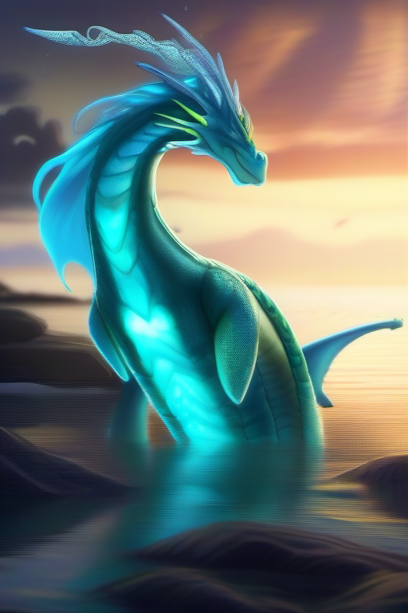

The Light of Lumina
Dive into the magical journey with Callie and Zephyr.

Callie Marlowe
An adventurous young explorer driven by her dream to bring hope and healing through the magical light of Lumina.

Zephyr
A playful, wise sea-dragon who guides Callie with riddles, encouragement, and a touch of mischief.
Chapter 1: The Call to Adventure

Callie Marlowe, driven by her dream of finding the healing light of Lumina, ventures into the deep ocean. Guided by Zephyr, her playful sea-dragon mentor, her journey begins.
"The sea holds secrets," Zephyr teased. "Let’s find them together."
Chapter 2: The Glowing Ruins

Navigating glowing ruins and mysterious sea creatures, Callie discovers hints of Lumina's light while overcoming challenges of courage and wisdom.
"Courage is a light in itself," Zephyr reminded her as they explored the ruins.